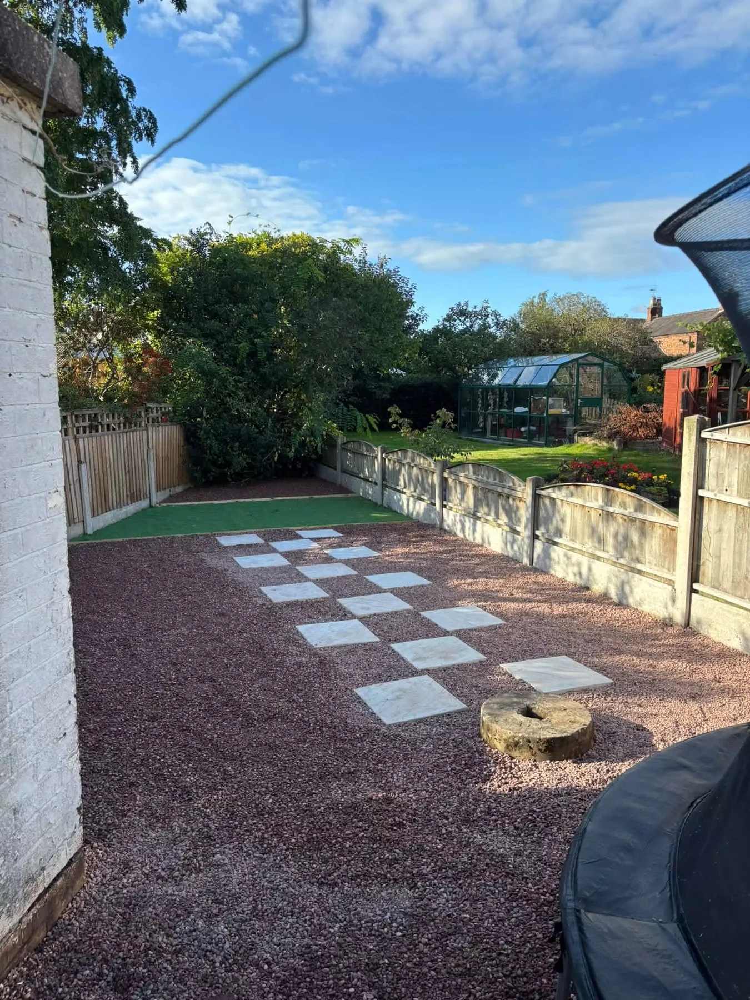
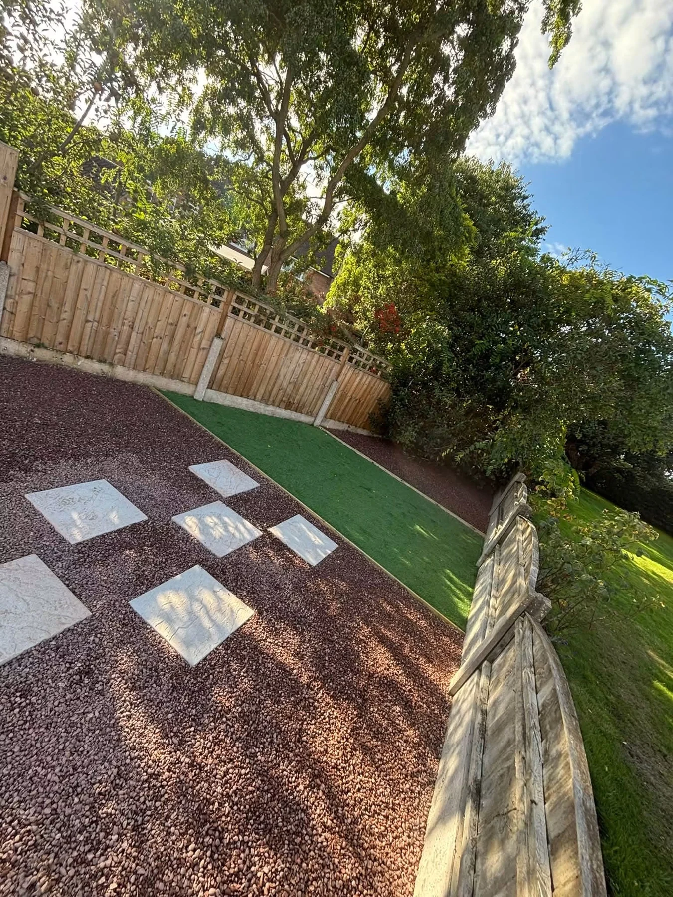

CHESHIRE & SURROUNDING AREAS · EST. 2023
Your property.
More possibilities.
Landscaping, property maintenance, exterior cleaning and clearances. One company for your property, garden and everything in between.
ONE COMPANY. PLENTY OF POSSIBILITIES.
A fresh start.
Inside and out.
A garden ready for a new layout. A patio ready to shine again. A property that needs clearing or a little maintenance.
Based in Cheshire, Grego’s Property & Landscaping offers a range of services for homes, gardens and businesses. Tell us what needs doing and share your postcode to discuss the work and availability.
Talk through your plans →

FROM PREPARATION TO FINISH
Make more
of your garden.
Ground preparation makes way for a new garden layout. The portfolio shows a mini excavator at work, followed by gravel, stepping stones and a defined artificial lawn.
Explore landscaping →GREGO’S PROJECT GALLERY
The work.
The visible difference.
Landscaping, tree work, exterior cleaning and clearances. Tap a photograph to see the full view.
GREGO’S ON THE JOB
Watch us
work.
See the team’s work in motion, from an old shed to a business clearance. Play either video for a closer look.
Tell us about your job →BEFORE & AFTER
A familiar patio.
A fresh finish.
Weeds and surface dirt give way to clear paving and contrasting bands. The supplied photographs show the same patio before and after cleaning.
Discuss your exterior clean →GREGO’S PROPERTY & LANDSCAPING
Your property.
In good hands.
Established in 2023 and based in Cheshire, Grego’s brings property and landscaping services together for a wide range of jobs.
Landscaping, turfing, artificial grass, patios, fencing and garden maintenance enquiries.
Exterior cleaning, property repairs, clearances, removals and man-and-van services.
Contact the team for a free, no-obligation quote. Share your location to confirm availability, including work further afield.
BEFORE WE GET STARTED
A few useful answers.
Where are you based?
Grego’s is based in Cheshire, serving Cheshire and surrounding areas. The business also welcomes UK-wide enquiries; share your postcode to confirm availability.
What services can I enquire about?
Landscaping, fencing, tree and hedge services, exterior cleaning, gutter and roof maintenance, groundworks, property repairs, clearances, moves and man-and-van services.
What should I send for a quote?
Your postcode, photographs and a description of the work. Approximate dimensions, access information and the amount of waste or items involved are useful.
Can you clear a business premises?
House, garden and business clearance enquiries are welcome. Send photographs and details of the items so the team can discuss the scope and access.
Does the WhatsApp form confirm a booking?
No. It prepares an enquiry for you to review and send. The team will discuss your requirements, quote and availability directly.
A FREE, NO-OBLIGATION QUOTE
Tell us the job.
Let’s make a plan.
Share a few details, your postcode and photographs of the space. Grego’s will discuss your property or garden work with you.
GREGO’S · CHESHIRE & SURROUNDING AREAS
Property. Garden.
Let’s get it sorted.
Talk to Grego’s about your next job.